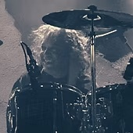

Formed in 2024 to play a one-night-only high school reunion, the chemistry was too hot to ignore. A
'name the band' contest winner, inspired by the high-school's actual annex fire in the 80's, lit the
flame and FITA was born!
ERICA TAYLOR
Erica brings versatility, charisma, and a genuine passion for music to every performance. As
FITA’s lead vocalist, she delivers on everything from rock anthems to pop favorites with a
seemingly effortless style and confidence, while also contributing powerful backup vocals.
Her performance experience includes appearances on the acclaimed stages of CAP21 at NYU’s
Tisch School of the Arts, as well as a stint with The Jersey Girls that earned her a spot on
the reality TV series Making the Band. Erica has previously toured the New Jersey circuit as
a backup singer, but with a voice like hers, she belongs front and center with FITA — where
she truly shines.

ULISES NEGRETE
Ulises toured internationally before settling in the U.S. In Cancun, he routinely played
large venues such as Daddy Rock, Coco Bongo, Tequila Boom and Hard Rock Café. He has shared
the stage with Bob Weir (Grateful Dead), Ronnie Wood (Rolling Stones), and Dave Hlubek
(Molly Hatchet), and recorded in studio with George Lynch (Dokken, Lynch Mob). He is
currently writing original music with Liquid Island.
DAVE ALPER
Though a classically trained and degreed musician and trumpet player, Dave found his true
home on lead guitar. After decades tearing it up in cover bands, he brings a versatile style
rooted in prog rock, blues, and folk, while also helping guide the band’s musical direction.
GLENN DEMKOW
Holding down the low end, Glenn is a multi-instrumentalist with decades of live experience.
From late-night boardwalk gigs to packed Jersey Shore bars, he's played in numerous bands —
most notably as the rhythm guitarist for the Jersey Shore favorite, Upside.
JEFF ENTIN
Keeping the groove on rhythm, Jeff is an aficionado of classic rock, R&B, grunge, and
pop-emo, performing in numerous acoustic and electric collaborations. He helps organize an
annual Battle of the Bands fundraiser supporting environmental scholarships, where he
performs with his Lather Rinse Repeat project.